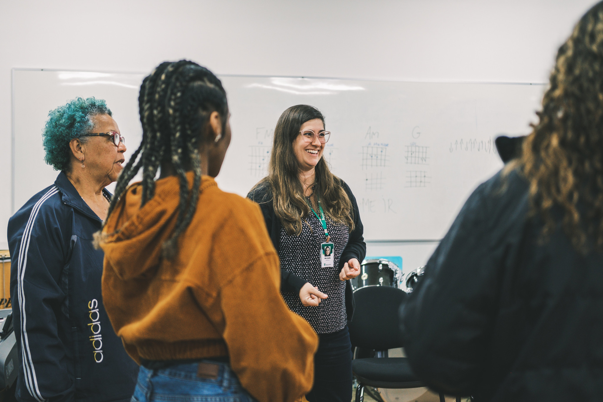
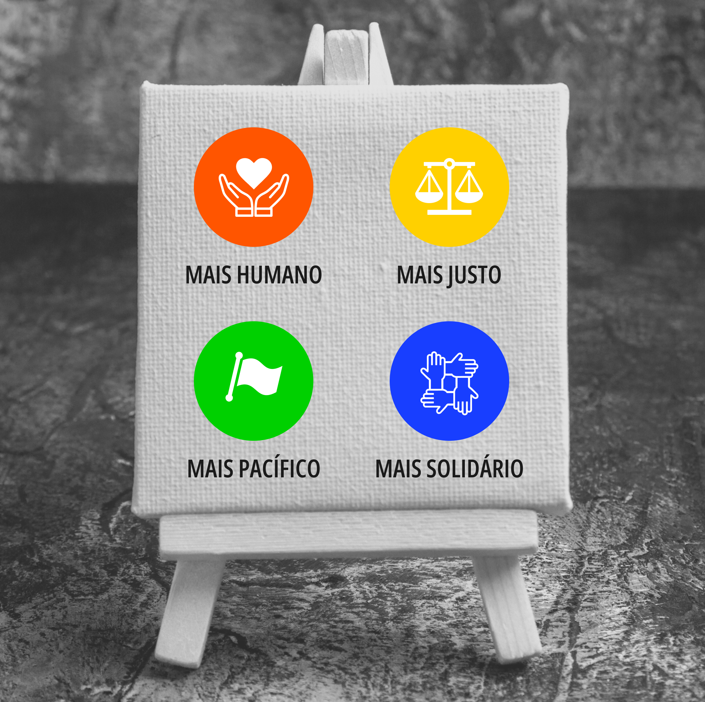

Gestão na EPT como estratégia de superação da doutrinação
Conforme vimos, ao abordarmos a gestão democrática na EPT, é essencial reconhecer que a democracia é fruto de uma construção coletiva, não uma concessão feita a alguém. Ou seja, o que realmente pode garantir a democracia e a democratização é a colegialidade. Por exemplo, na instância de um curso, estão aí representados os docentes, discentes e demais servidores que dão suporte e condições para que de fato flua a formação omnilateral. No entanto, as decisões tomadas e estratégias de gestão do e no próprio curso devem considerar o interesse de todos os atores envolvidos. A gestão de uma unidade e a coordenação de um curso são mediadores da realização da gestão democrática, mas não podem ser instâncias decisórias isoladas. Uma formação, independentemente de seu nível ou modalidade, não pode ser um curso do campus, da coordenação ou do colegiado, mas deve ser a expressão máxima da colegialidade em torno dela. A gestão, se democrática, deve evitar que um curso seja para a coordenação ou grupo de professores chamar de “seu”.
De modo similar, a reunião dos cursos ou das coordenações de cursos, frequentemente denominada NPI (Núcleo Pedagógico Integrado), tem como objetivo pensar a Unidade de Ensino como um todo, conciliando a unidade e a diferença, sem exigir uma unicidade rígida. Na colegialidade dos cursos ofertados em um determinado campus, por exemplo, deve haver espaços e situações formativas em que os diferentes cursos se encontrem para refletir sobre suas demandas de ordem teórica e prática. São momentos e movimentos como esses que garantem um olhar para o que está sendo feito, de modo a produzir reavaliações, retomadas de aspectos teóricos, avaliação das ações etc.

Título: A colegialidade na Gestão da EPT
Fonte: Gaia Schüler (2023b).
Ainda, os Colegiados de Campus, os Conselhos Superiores (CONSUP), Colégio de Dirigentes, entre outros, precisam constantemente retomar as bases conceituais e legais do seu ser e fazer para estimular a ampliação dos espaços democráticos. Isso é fundamental para prevenir o risco de que uma gestão de unidade ou mesmo de reitoria aproprie-se das instâncias de decisões legítimas para impor suas convicções.
Como um exemplo, o Conselho de Dirigentes (CODIR) é uma instância consultiva, enquanto o CONSUP é uma instância deliberativa. As reuniões da primeira possuem um caráter mais político, portanto, de acordos e proposições diplomáticas, enquanto na segunda instância temos o normativo, a construção dos regramentos que irão balizar as ações institucionais. Isso significa que, se algo já vem pronto ou previamente estabelecido do CODIR para o CONSUP, o próprio CONSUP não tem razão de ser.
Quando não refletimos sobre essas diferenças e atribuições, o CODIR pode ser cooptado para servir como um mero ensaio para o que será apresentado no CONSUP, e os colegiados de unidades apenas espaços para assinar as atas do que já foi a priori decidido. Entretanto, a gestão democrática em EPT exige um olhar atento para as representatividades, a fim de que não se caia num gerencialismo panóptico que controla e cerceia, vigia e pune, divide e oprime. Dito de outro modo, as instâncias deliberativas precisam ser fomentadas e devidamente instruídas, da mesma forma que as instâncias consultivas, para que não haja fusão ou confusão entre cada espaço de construção das decisões.
A forma como a instituição organiza os seus trâmites também educa e forma para a cidadania. Estamos diante de um contexto no qual precisamos compreender que a nossa práxis também diz sobre o que acreditamos, sobre o que fazemos e o que pensamos. Nossos discentes aos poucos são iniciados muito mais pelo que fazemos como práxis da democracia do que propriamente pelo que dizemos ou almejamos fazer. Por isso, Gestão Democrática em EPT não tem relação com quem irá permanecer ou não no poder, como sugeriu Maquiavel em O Príncipe, mas com a radicalidade de nosso compromisso com as bases conceituais e legais que nos criaram.
Essa radicalidade, já sugerida por Vítor Paro (2010), precisa ser parametrizada no grau de autonomia, do bom governo de si que cada estudante vai obtendo ao passar pelos processos de ensino e aprendizagem, pelos nossos processos decisórios e isso não pode ser quantificado. Portanto a gestão democrática em EPT precisa considerar os seguintes pressupostos: trabalho como princípio educativo, pesquisa como pressuposto pedagógico, a formação omnilateral, a politecnia etc.
Dito de outra forma, a régua que deve medir nosso fazer e justificar nossa identidade como autarquia federal é a capacidade potencial de superarmos a doutrinação de toda sorte e de tornarmos as novas gerações mais livres, mais justas, mais humanas e mais democráticas, inclusive em relação ao mundo do trabalho. Para Fernando Tenório (1998), que se apoia em o fim da educação é a potencialização da ação cidadã e da razão comunicativa, subvertendo a centralidade humana do trabalho como fim da existência humana pela centralidade da comunicação como potencialidade da linguagem em nos humanizar. De modo similar, Arendt (2005) e Nussbaum (2015) sugerem que o verdadeiro papel da educação escolar, formalmente falando, é antes de tudo formar para a democracia e para a prevenção dos totalitarismos, tendo em vista que esses nascem da falta de reflexão e de senso crítico. Na EPT, temos o papel político da formação técnica que vai além da mera preparação para a universidade, ou, no caso brasileiro, para o ENEM. Nossa missão é dupla: formar para a cidadania plena do ponto de vista do acesso e domínio da ciência e da tecnologia, e, ao mesmo tempo, profissionalizar. Um curso técnico possui a intencionalidade de que o egresso seja, além de um excelente cidadão, um profissional preparado para a dialética do e no mundo do trabalho.
Título: Profissionalizar e formar para a cidadania
Fonte: Gaia Schüler (2023c).
Por isso, a formação omnilateral e politécnica pretende, antes de tudo, a reflexão sobre como se constitui a sociedade e como se fundamentam as relações de trabalho para que a inserção dos novos profissionais seja um movimento de atuação por contradição ao estabelecido, ao dado, ao constituído. Seu principal objetivo é a construção de uma nova sociedade, sem exploradores e explorados, mas em que todos tenham plenas condições de proverem o seu próprio sustento e contribuir para a melhoria constante das relações sociais.
Assim, a gestão democrática em EPT visa mais à ampliação da possibilidade intersubjetiva entre sujeitos livres – ao construir arranjos consensuais e ampliar a visão cosmopolita e democrática – do que propriamente ao controle de pessoas ou de processos. Dito de outro modo, trata-se de potencializar os meios de produção da racionalidade comunicativa e da ampliação do diálogo e da controvérsia, e não de instrumentalizar os processos e estratégias de controle das pessoas e os processos formativos.
Na proposição da Ação Comunicativa de Habermas, por exemplo, o modelo orientador das ações e estratégias é o entendimento mútuo, alcançado pela comunicação entre subjetividades. Por isso, a gestão em EPT se assemelha muito ao que denominamos como Gestão Social.
A gestão social contrapõe-se à gestão estratégica na medida em que tenta substituir a gestão tecnoburocrática, monológica, por um gerenciamento mais participativo, dialógico, no qual o processo decisório é exercido por meio de diferentes sujeitos sociais. E uma ação dialógica desenvolve-se segundo os pressupostos do agir comunicativo [...] quando os atores tratam de harmonizar internamente seus planos de ação e de só perseguir suas respectivas metas sob a condição de um acordo existente ou a se negociar sobre a situação e as consequências esperadas [...]
Uma gestão para além dos processos e produtos, sobretudo em EPT, precisa favorecer a emancipação lenta, gradual e permanente diante de todo e qualquer dogmatismo – diferente do que ocorreu, por exemplo, no Brasil entre os séculos XVI e XVIII. Dermeval Saviani (2011), filósofo e pedagogo brasileiro, critica o modelo de doutrinação imposto pela primeira matriz educacional do país que, já em 1549, ofertava a catequese jesuítica às comunidades tradicionais, as quais não tinham seu contexto e suas verdades valorizadas. Com a laicização promovida por Marquês de Pombal, em 1759, os jesuítas são expulsos do Brasil; em contrapartida, há a imposição do positivismo como critério para a educação formal – modelo laico, mas doutrinário. Ou seja, em termos de produção da visão democrática e participativa, não houve progresso, apenas substituição de uma visão autoritária por outra.
A gestão democrática não usa a sua missão para se autopromover ou promover propostas específicas, pelo contrário, ela visa potencializar a controvérsia e o debate, sem perder de vista seu propósito e sua atividade fim. Fica claro que há um distanciamento do modelo taylorista, que aplica de maneira equivocada o pensamento cartesiano – originalmente voltado à produção de bens – para a gestão de pessoas, em uma lógica sujeito-objeto. A perspectiva de Habermas, por sua vez, aproxima-se de nossos objetivos enquanto rede federal, pois propõe uma gestão social que instiga a comunicação constante entre sujeitos que dialogam em busca de um consenso (lógica sujeito-sujeito).
Tenório (2006) argumenta que tanto o modelo de concepção das ciências como o do mercado é sempre unidimensional, sendo assim todas as ações e concepções convergem para a mesma finalidade. Na multidimensionalidade, típica da gestão social, todas as relações - quer sejam produtivas, quer sejam sociais - encontram possibilidades da realização pessoal do indivíduo num leque de enclaves da vida social que podem ser da ordem econômica, cultural, territorial, entre outras. Ou seja, não existe um único caminho ou uma única concepção possível, porque o mote de organização é a divergência e não a convergência; é a controvérsia e não a disputa; o dissenso e não o consenso pleno; é a busca constante por um acordo baseado na noção de unicidade, sem que isso afete a unidade. Mas, na democracia, é importante que sejamos e estejamos dispostos a buscar acordos, sem a necessidade de um pensamento único.
A gestão democrática em EPT deve considerar que vivemos numa sociedade livre e democrática, mas que precisa ser fortalecida em cada ação, em cada movimento, em cada processo e em todos os setores da instituição. Os próprios princípios da gestão pública, entre eles, a publicidade, a transparência, a eficiência, a impessoalidade, a legalidade e a moralidade, balizam o nosso agir para um movimento que é muito mais de viés qualitativo, ético e político, do que propriamente quantitativo (baseado na eficiência numérica e positivista). A eficiência, nesse caso, precisa ser ampliada para uma visão mais profunda, com base em uma garantia de fato, ou condição de possibilidade para que os direitos fundamentais da pessoa humana sejam e estejam assegurados em todos os processos e serviços. O papel primordial do Estado ou de uma autarquia estatal não é o lucro ou a produção meramente eficiente do ponto de vista toyotista, mas a entrega adequada daquilo que é configurado como direito de todo e qualquer cidadão.
Dessa forma, o entendimento acerca de gestão social vem reforçar suas características políticas, contrapondo-a a gestão estratégica. Esse modelo de gestão é “um tipo de ação social utilitarista, fundada no cálculo de meios e fins e implementada através da interação de duas ou mais pessoas, na qual uma delas tem autoridade formal sobre a(s) outra(s)”. A gestão social contrapõe-se à gestão estratégica à medida que propõe “um gerenciamento mais participativo, dialógico, no qual o processo decisório é exercido por meio de diferentes sujeitos sociais”
A democratização da EPT se dará pela ampliação dos espaços de construção de perspectivas e possibilidades democráticas. A partir da integralização do trabalho como princípio educativo, presente em todas as ações e partes dos processos decisórios institucionais, busca-se produzir uma convicção dialética de olhar a realidade não apenas como contradição, mas administrá-la por contradição. Ou seja, não podemos olhar o contexto em que estamos inseridos como algo essencialmente pronto ou dado, mas como uma tela que precisa ser tingida com ações e pensamentos que produzam, na teoria (theoria) e na práxis, que sejam potências de um novo contexto: mais humano, mais justo, mais pacífico e mais solidário.

Titulo: Tela em Construção: Potencializando um Novo Contexto
Fonte: Prosa (2024f).
Aqui, precisamos resgatar o sentido filológico das palavras gregas Theoria e Práxis. No senso comum, apresentamos, costumeiramente, a teoria como se fosse uma oposição à prática (em grego, práxis). Há até algumas expressões do tipo: “eu sou uma pessoa prática", “eu não gosto de teoria" e assim por diante. Se resgatarmos as palavras gregas em sua origem (theoria e praxis), elas são apenas partes diferentes de um mesmo movimento. Diante de um fenômeno que não se sabia o que era (um eclipse, por exemplo) havia o espanto (thauma) que gerava a necessidade de observação demorada (theoria) para compreender que tal escuridão era um fenômeno natural e não sobrenatural. Esse movimento intelectivo de olhar demoradamente para além do que se vê, de apreender cognitivamente tal fato e aplicar na vida prática, é o que os gregos chamavam de práxis, ou seja, o resultado direto de uma teoria.
A política nasceu disso. Alguém contemplou a harmonia e a beleza do universo (kósmos/kosméo) e teve a intuição de aplicar essa theoria (visão intelectual) ao cotidiano (práxis). Ou seja, a condição para a democracia grega era a capacidade teorizar e aplicar essas descobertas intelectuais ao cotidiano. Assim, teoria para os gregos representava a capacidade de ver intelectualmente e práxis, a aplicação disso à realidade. No sentido político, práxis é a aplicação na vida de uma determinada convicção ou ideia.
É de suma importância fazermos as distinções conceituais entre aquilo que é da ordem do entendimento teórico (as bases conceituais ou legais da EPT) e aquilo que está diretamente relacionado às práticas educativas da instituição (organização e gestão dos espaços e processos administrativos). Isso porque, se não tivermos a apropriação mínima do que é formar pessoas na visão ético-política da formação omnilateral e politécnica, nossas ações serão limitadas a formarmos mão de obra para o mercado de trabalho e, ao invés de sermos espaço de reflexão e contradição ao hegemônico, faremos justamente o contrário.
Isso precisa contrastar com as antigas definições dos motivos e finalidades pelas quais formamos pessoas para esta ou aquela função. Nesse sentido, a formação omnilateral e politécnica deve ser contínua para um constante despertar da cidadania ativa, para que os sujeitos tenham plena convicção de seus direitos e deveres. Devemos formar novos trabalhadores cosmopolitas, precursores de um novo tempo, de uma nova sociedade e de novas formas de relação social, dialeticamente livre e responsável.
- Qual é o sentido e o papel político da formação omnilateral em EPT?
- Quais atitudes democráticas podemos/devemos potencializar na práxis?
- Por que teoria e prática não podem ser vistas como oposição?
- No contexto em que você atua, o maior desafio é de ordem prática ou teórica? Justifique.
Registre seus pensamentos em seu Memorial e/ou siga as instruções de seu tutor.